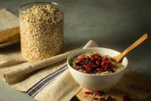

HyperText Markup Language 과자, 떡, 시리얼, 시리얼 바, 빵 등 일명 나쁜 탄수화물이 많이 들어 있는 먹거리도 피해야 한다. 반면에 현미 같은 통곡물과 섬유질이 많은 과일에 들어 있는 좋은 탄수화물은 다이어트를 할 때도 먹어줘야 한다. 정제 탄수화물의 문제는 포만감을 느끼는 시간이 매우 짧아 간식을 찾게 된다는 점이다. 끼니와 끼니 사이에 느끼는 허기를 달래줄 좋은 방법은 섬유질, 탄수화물 및 단백질이 포함된 걸 먹는 것이다. 저칼로리 치즈와 과일, 땅콩버터와 사과, 귀리 플레이크와 호두나 아몬드가 들어간 요구르트 등이 좋다.
흰 빵에는 혈당을 높이는 설탕이 많이 들어 있다. 빵은 대부분 정제 밀가루를 사용하기 때문에 하루에 흰 빵 두 조각만 먹어도 살이 찔 수 있다. 보통 과자나 케익에는 트랜스 지방이 포함돼 있다. 트랜스 지방은 액체 상태인 식물성 지방에 수소를 넣어 고체로 만드는 과정에서 생기는데 고소한 맛을 낸다. 하지만 트랜스 지방은 나쁜 콜레스테롤 수치를 올려 심혈관계 질환과 당뇨, 비만을 유발한다. 다이어트를 할 때 케이크나 쿠키에 대한 욕구가 커지면 통곡물 옵션을 선택해보라. 통곡물은 오래 씹어야 하고 껄껄해서 적응하는 데 시간이 걸릴 수 있지만 보상은 크다. 통곡 밀가루와 씨앗 그리고 다크초콜릿으로 디저트를 준비해보자. 이렇게 먹으면 체중을 늘리거나 건강을 해치지 않고 허기와 욕구를 해결할 수 있다.